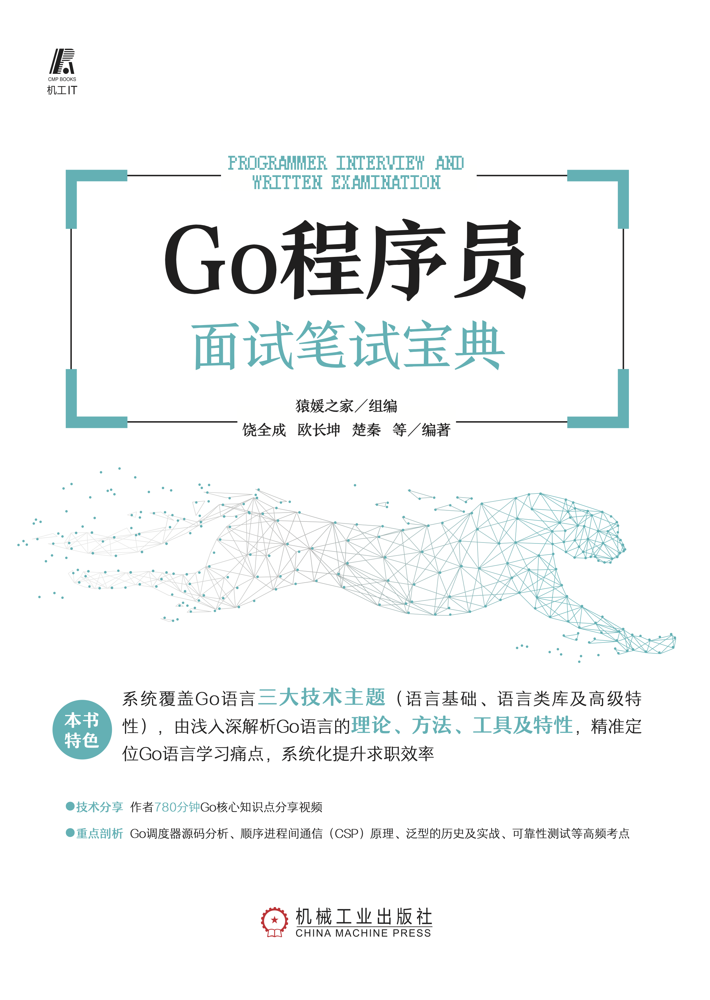

Go宝典 #
作者: 饶全成, 欧长坤, 楚秦 等编著
ISBN: 978-7-111-70242-9
出版社：机械工业出版社
购买链接 #
关于本站 #
这个站点包含了纸质版图书中的部分内容、对纸质版图书内容的部分更新以及勘误， 我们推荐读者购买实体书籍配合本站共同使用。
致读者 #
因为 Go 语言在服务端的开发效率、服务性能有着不俗的表现，最近几年，Go 的热度越来越高。国内外很多大公司都在大规模地使用 Go。Google 就不用说了，它是 Go 语言诞生的地方，其他公司 如 Meta(Facebook)、uber、腾讯、字节跳动、知乎、脉脉等都在拥抱和转向 Go。用 Go 语言开发的著名开源项目也非常多，如 k8s、docker、etcd、consul，每个名字都是如雷贯耳。
随着市场对 Go 语言人才需求的不断增长，很多开发人员都从其他语言，如 PHP、C++、Java 等 转投 Go 语言的怀抱。因为 Go 语言自身的特点和优势，这些转型的开发人员也能写出性能不错的代码。但是，由于没有深入系统地学习 Go 的底层原理，在某些场景下，因为不懂底层原理，无法快速定位问题、无法进行性能优化。
有些人说，语言并不重要，架构、技术选型这些才是根本。笔者觉得这个说法不完全对，架构、技术选型固然重要，但语言其实是开发人员每天都要打交道的东西，会用是远远不够的，只有用好、知其所以然才能更全面地发挥其威力。
近一两年，笔者在中文世界论坛里发表了很多篇与 Go 源码阅读相关的文章，也是在写作本书的过程中做的功课。我通过看源码、做实验、请教大牛，对 Go 的“理解”逐渐加深。再去看很多文章就会感觉非常简单，为什么这些我都能掌握? 因为我研究过，我知道原理是什么，所以也知道你想要说什么。
最后，无论你是面试官，还是求职者，这本书都能让你有所收获。另外，本书内容不仅仅是对面试有帮助，所有写 Go 的程序员都能从本书中有所收获，能让你的 Go 水平真正上升一个台阶。
致谢 #
在写作本书的过程中，我和本书的二作欧长坤有很多交流讨论，他对 Go 的理解非常深，他同时也是 Go Contributor，我们的交流和讨论让我对很多问题有了更深入的理解，非常感谢。我从 Go 夜读社区 的分享中学到了很多东西。并且我本人也担任讲师， 分享了多期 Go 相关的内容，很多观众都表示很有帮助。教是最好的学，我本人的收获是最多的。感谢 Go 夜读社区的发起者杨文及 SIG 小组成员煎鱼和傲飞。另外，我和 “Go 圈” 的很多博客作者也有很多交流，比如曹大、Draven 大神收获良多，在此一并感谢。这两年，我在 “码农桃花源” 发表了很多文章，得到了很多读者的肯定，这也是我能不断写作的动力，感谢你们。
交流和勘误 #
我们在这里维护了一份已出版内容的勘误表，以帮助并消除读者在阅读过程中出现的困惑。 读者还可以本书的 GitHub 仓库 里讨论关于本书内容的问题，或报告并提交本书存在的错误。
我们欢迎你在 GitHub 仓库上发起 Issues 或提交 Pull Request。
我们也欢迎你关注 “码农桃花源” 的公众号，和更多的人一起学习：
作者的其他技术分享视频 #
| 主题 | 作者 | 观看链接 |
|---|---|---|
| Go defer 和逃逸分析 | 饶全成 | YouTuBe, Bilibili |
| Go map 源码阅读 | 饶全成 | YouTuBe, Bilibili |
| Go Scheduler 源码阅读 | 饶全成 | YouTuBe, Bilibili |
| Go channel & select 源码阅读 | 欧长坤 | YouTuBe, Bilibili |
| CSP 理解顺序进程间通信 | 欧长坤 | YouTuBe, Bilibili |
| 真实世界中的 Go 程序并发错误 | 欧长坤 | YouTuBe, Bilibili |
| Go 1.14 time.Timer 源码分析 | 欧长坤 | YouTuBe, Bilibili |
| Go 2 泛型预览 | 欧长坤 | YouTuBe, Bilibili |
| 对 Go 程序进行可靠的性能测试 | 欧长坤 | YouTuBe, Bilibili |
| Go 1.18 的泛型 | 欧长坤 | YouTuBe, Bilibili |